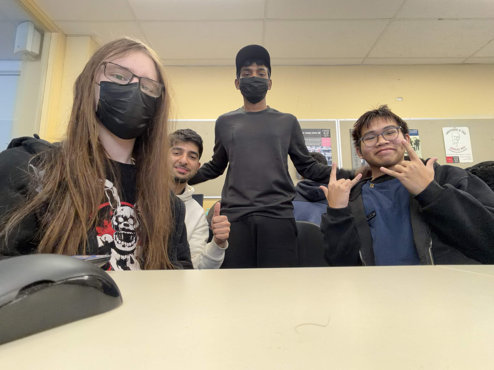

About the Team
Community Connect's site was designed and built by a four-person student team over Semester 2, 2026. This page introduces who we are, what each of us contributed, and a little about us outside of the project.
Group details
- Group name: HD
- Lecture: Monday 4:30pm–5:30pm (Dr Atie Kia)
- Tutorial: Tuesday 12:30pm–2:30pm (Razeen Hashmi)
Member contributions
- Shahryar Rahman Saad (Sam) — 106406031
- Project lead. Set up and maintained the GitHub repository and Jira board, built the shared page structure, navigation and base CSS that every page sits inside, and developed index.html.
- Gia Nghia Le (Tom) — 106424716
- Communication lead. Kept the team Discord channel active, liaised with the teaching team via the Canvas discussion board, and developed apply.html, including the job application form.
- Shashwat Chhabra (Shash) — 106514329
- Project documentation. Developed about.html and prepared the written documentation accompanying the project on GitHub.
- Declan Elliott — 106052926
- QA analyst. Developed jobs.html and ran testing across the site throughout development, including HTML/CSS validation, link and form checks, cross-browser testing, and third-party resource attribution.
Quotes
Something each of us enjoys or feels strongly about.
"You cannot shake hands with a clenched fist." - Indira Gandhi
"Doubt kills more dreams than failure ever will." - Suzy Kassem
"Never put off until tomorrow what can be done today" - Sensei Wu
"First we mine, then we craft. Let's MINECRAFT" - Steve
The team

Fun facts
| Name | Fun fact |
|---|---|
| Shahryar (Sam) | I am interested in web development and enjoy creating interactive websites. |
| Gia Nghia Le (Tom) | I am a big fan of anime and manga, and I enjoy watching and reading them in my free time. |
| Shashwat (Shash) | I love to play Football/Soccer and I am very passionate about it. |
| Declan | I am really into music and I play the guitar in my spare time. |